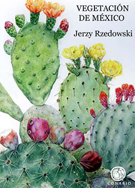
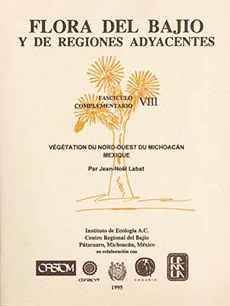

Referencias
- Calderón Díaz Barriga, G. 1998. Cincuenta años, un largo recorrido hacia la flora del Bajío y de regiones adyacentes. Pp. 11- 33. En: Zamudio, G., y G. Sánchez Díaz (Coord.). Entre las plantas y la historia. Universidad Michoacana de San Nicolás de Hidalgo, Sociedad Botánica de México,. Facultad de Ciencias, UNAM.
- Centro Regional del Bajío del Instituto de Ecología A.C.
- González, F.R. 2009. Semblanzas: Dr. Jerzy Rzedowski Rotter. Revista Fuente 1(1): 45-48.
- Magaña, P. y J.L.Villaseñor. 2002. La flora de México: ¿Se podrá conocer completamente? Ciencias 66: 24-26
Jerzy Rzedowski
1926 –
Jerzy Rzedowski Rotter es un notable botánico, autoridad en el campo de la florística mexicana, se ha especializado en su ecología, clasificación y distribución.
Nació en 1926 en la ciudad de Lwów, hoy Ucrania. En su país natal comenzó su formación académica, pero debido a los estragos de la segunda Guerra Mundial se mudó junto con su padre a México en 1946.
Estudió la carrera de Biología en la Escuela Nacional de Ciencias Biológicas del Instituto Politécnico Nacional realizando su tesis sobre la vegetación del Pedregal de San Ángel bajo la dirección del Dr. Federico Bonet. Durante estos años conoció a la bióloga Graciela Calderón con la que más tarde se casaría. Al terminar su licenciatura ingresó a laborar como investigador en la Universidad de San Luis Potosí. En esos años colaboró con la fundación del Instituto de Investigación de Zonas Desérticas y promovió la creación del primer herbario estatal en dicho estado.
En 1958 realizó una estancia en Francia donde hizo estudios de ecología vegetal y aprendió los métodos europeos de investigación en este campo. En 1959 comenzó a laborar en el Colegio de Posgraduados de Chapingo, además de obtener el Doctorado en Ciencias por la Facultad de Ciencias de la Universidad Nacional Autónoma de México, bajo la dirección del Dr. Faustino Miranda.
Es cofundador, y actual editor, de la revista Acta Botánica Mexicana A. C., una de las publicaciones más importante en este campo a nivel nacional. Asimismo, creó el Centro Regional del Bajío del Instituto de Ecología A.C., y es coeditor de la serie Flora del Bajío y de Regiones Adyacentes. Ha publicado alrededor de 120 artículos de investigación, nueve libros y varias decenas de capítulos de libros. Una de sus más conocidas obras La Vegetación de México (1978), es una referencia clásica en la literatura botánica.
¿Sabías qué?
México tiene una enorme riqueza biológica, en él están representados casi todos los tipos de vegetación del planeta. Se estima que en este país existen 22 411 especies de plantas vasculares, lo que representa el 10 % de la flora mundial y lo coloca en el cuarto lugar de diversidad, después de Brasil, Colombia y China.
Todavía faltan muchas especies por descubrir en México, pero la acelerada destrucción de sus ecosistemas constituye una amenaza importante para poder conocerlas todas.
Aportación

Rzedowski, J., 2006. Vegetación de México. 1a. Edición digital, CONABIO, México, 504 pp.

Fascículos publicados. La Flora del Bajío y de Regiones Adyacentes, Instituto de Ecologia, A.C.